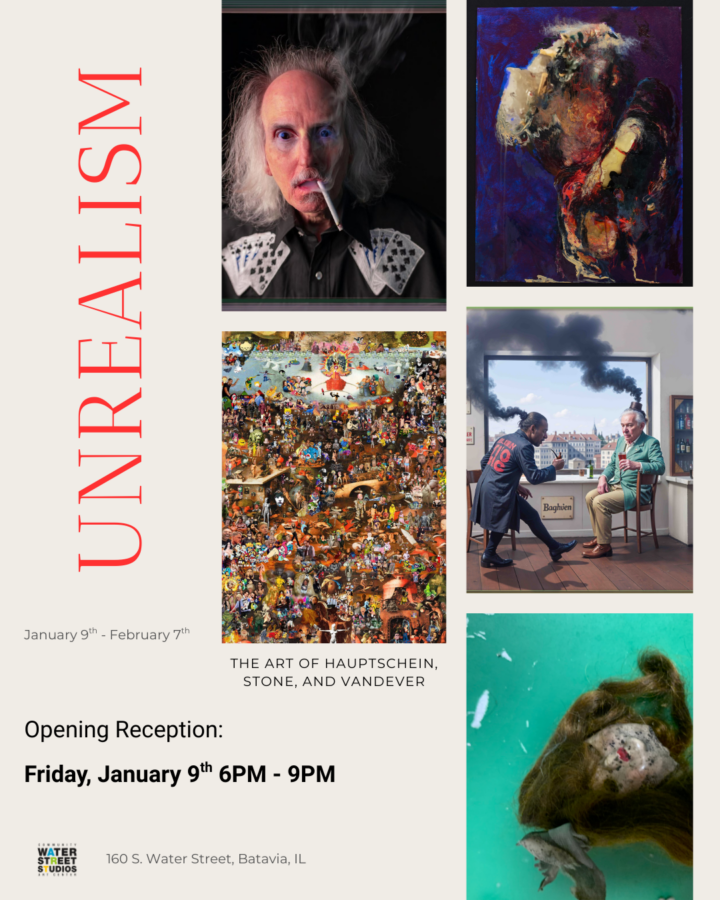

Unrealism: The Art of Hauptschein, Stone, and Vandever
Water Street Studios is starting off the new year with a bang! Unrealism: The Art of Hauptschein, Stone, and Vandever, is opening Friday, January 9! David Hauptschein, Michelle Stone, and Allen Vandever are three of Chicago’s most fearless artists. They are not bound by other people’s rules, tend to reject their teachers’ dicta, and boldly experiment with any and all media. They embrace the unexpected, thrive in ambiguity, and always leave you with something to think about. Vandever and Stone are equally comfortable with painting, sculpture, collage, and digital. Whatever medium they choose, the end result is bound to be surprising, shocking, and always has a visceral impact.
Hauptschein has spent the last two years exploring the outer limits of AI as a tool for picturemaking. His pictures are mysterious narratives designed to capture and confound the viewer, who, if not weighed down by erroneous preconceptions as to what AI is, will delight in joining in on the creative process by speculating on the motives of the characters and interpreting the various storylines.
For more information, see https://waterstreetstudios.org/upcoming-exhibitions or call Water Street Studios at (630) 761-9977